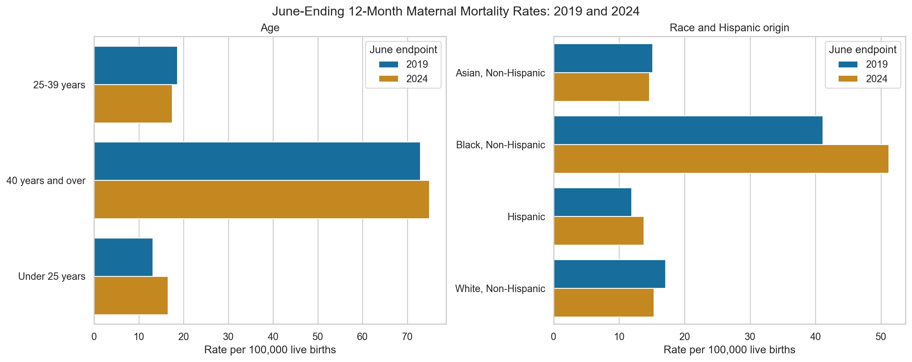
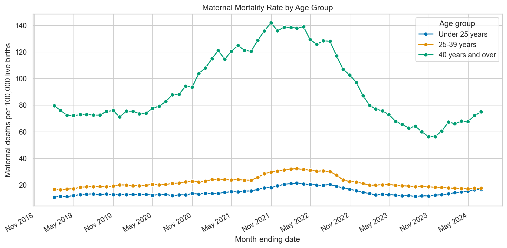
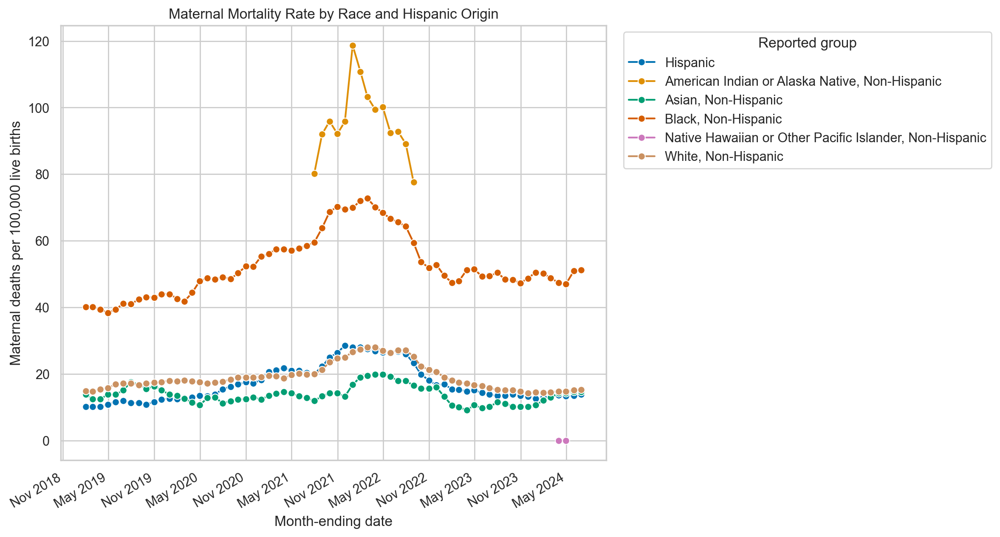
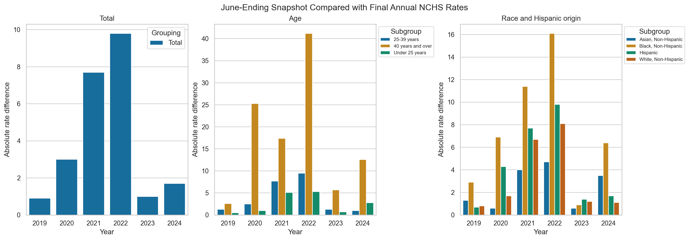

Overview
The class submission centered on an intersectional research paper about maternal mortality and reproductive health. The original machine-learning notebook was an experiment developed in support of that paper, using techniques from Python Data Science Tools.
This later revision is written for graduate admissions reviewers and prospective employers evaluating public-health data analysis, reproducibility, data-quality judgment, and responsible analytical practice. The stronger portfolio story is the methodological review: an initial ML design was examined, its limits were identified, and the project was redesigned around defensible descriptive questions.
Why this revision exists
From class experiment to portfolio evidence
This is clearly a post-class update, not a rewrite of the original submission. The research paper remains the focus of the class record. The revised notebook shows continued learning after class: it identifies target leakage, respects the dependence in rolling estimates, and communicates what the data cannot establish.
Research questions
- How did U.S. maternal mortality rates change during the observed period?
- How did rates differ across age groups?
- How did rates differ across racial and Hispanic-origin groups?
- Which patterns appear persistent when comparable June endpoints are used?
- How do provisional estimates, suppression, and rolling windows affect interpretation?
How the analysis works
- Preserve the source. Keep the original CDC/NCHS snapshot as raw input so the revision remains comparable to the class project.
- Assess data quality. Parse dates and numeric fields, record suppression and reliability flags, and avoid imputing reported rates.
- Separate analytical groupings. Analyze total, age, and race/Hispanic-origin records as overlapping summaries rather than independent observations.
- Visualize surveillance. Use rolling estimates for context while explaining that adjacent months overlap.
- Compare like with like. Use June-ending estimates for year-over-year comparisons because June is available for every year in the snapshot.
- Interpret cautiously. Describe patterns without treating demographic categories as causes or making intervention claims.
Tools & technologies
Data & definitions
The CDC/NCHS source reports maternal deaths per 100,000 live births for 12-month-ending periods. The snapshot covers January 2019 through June 2024 and contains total, age, and race/Hispanic-origin groupings. The source suppresses death counts from 1 to 9 for confidentiality and suppresses or flags rates based on fewer than 20 deaths because of reliability concerns.
Race and Hispanic origin are reported demographic groupings, not proxies for socioeconomic status. The dataset does not include income, education, insurance, clinical history, prenatal-care access, rurality, provider availability, or other independent predictors.
Methodological revision
The original course version is preserved in Git history and tagged locally as course-submission-2025. The revised repository documents the change openly so the project shows coursework, continued learning, methodological critique, and responsible redesign.
What the revised analysis shows
The overall June-ending rate was 19.2 per 100,000 live births in 2019 and 19.6 in 2024. Among age groups, the 40-years-and-over group had the highest reported rate at both endpoints, increasing from 72.9 to 74.9. Among non-suppressed race and Hispanic-origin comparisons, the Black, Non-Hispanic group increased from 41.1 to 51.2. These are descriptive differences in reported national estimates, not causal findings.



What the final-data benchmark teaches us
The course-era June-ending snapshot reported an overall 2024 rate of 19.6 per 100,000 live births. The CDC/NCHS final calendar-year 2024 estimate is 17.9, a difference of 1.7 rate points, or about 9.5% relative to the final value. That is a useful quality check, but it is not pure model error: the comparison uses different time windows and data vintages.
Across the like-group comparisons available from 2019 through 2024, the mean absolute difference was 4.02 rate points for the total series, 7.97 for age groups, and 4.35 for race and Hispanic-origin groups. The largest age-group difference was 41.2 points. The pattern reinforces why future analyses should define the estimand first, compare like-for-like periods, separate provisional from final data, record the source vintage, and report signed, absolute, and percentage differences.

Limitations
- These are national aggregate surveillance estimates, not individual-level observations.
- Adjacent 12-month-ending windows overlap and are not independent.
- Provisional estimates may change as records are received and reviewed.
- Suppression and low-count reliability rules limit some subgroup comparisons.
- Death-certificate reporting and classification can affect measurement.
- The dataset cannot establish individual risk, causality, or intervention effectiveness.
AI-assisted revision disclosure
AI tools assisted with repository review, methodological critique, code restructuring, documentation drafting, and portfolio copy editing during this post-class update. Crystal Hollis remains responsible for the final research questions, analytical choices, data handling, interpretation, limitations, and review of the finished materials.